此範例是為了練習透過 docker 佈署，並於更版當下，利用 shared-cookie 避免網站的使用者被登出系統
首先我們先建立一個新的 demo 專案，環境為.netCore 2.1，為了方便示範，使用了預設的 MVC 範本，這邊我是透過 visual Studio 2019 建立的，似乎透過 cli 建立的範本會有點不同，但不影響示範
加入 identity
第一件事情就是將網站的登入機制建立起來
正常來說我們會讓使用者輸入帳號、密碼，並且經過後端驗證，一般會去資料庫查詢並回傳結果，如果沒問題的話，我們就會從資料庫中取得該會員的資料並設定在身份聲明中，這些聲明在網站的程式碼中可以隨時被調用
AccountController.cs
1 | // LoginRequest 只是一個單純的 DTO 物件，只有 LoginId 與 Password 兩個屬性 |
AuthorizeManagement.cs
HttpContext 透過建構式注入取得，於 startup.cs 中設定
1 | public static async Task SignInAsync(string loginId) |
startup.cs
1 | // startup.cs |
other files
其他的檔案細節請自行參考 github
測試網站
首頁已經改成/Account/Index，所以一開網站應該就會看到下面這畫面
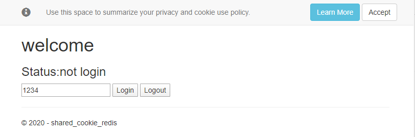
將開發者工具開啟，可以看到 cookie 是沒東西的
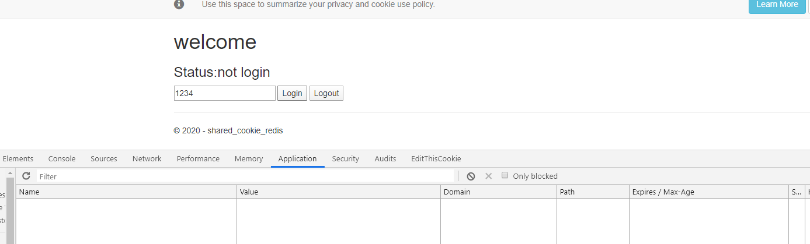
點選 Login 之後，看到 Cookie 就產生出來了，注意到 Expires 的時間，正好是我截圖時候再加 15 分鐘
Cookie 的時間是 GMT 時間
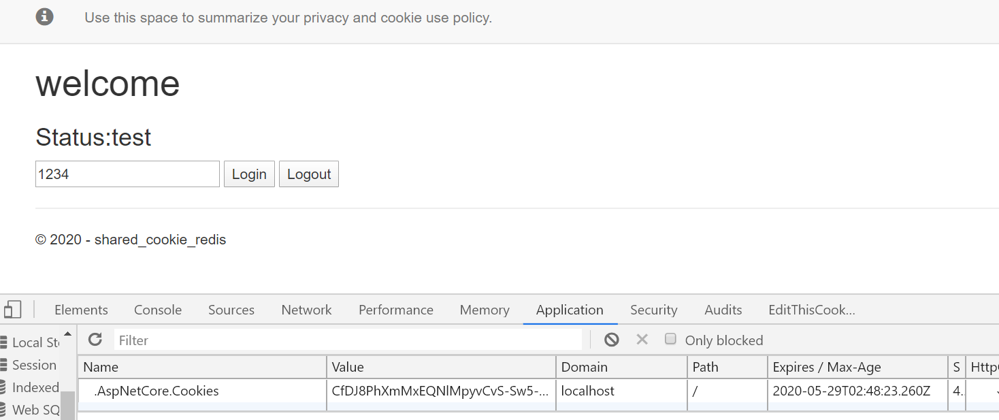
測試 docker images 佈署
登入機制看起來動作很正常，一般情況下也沒問題，但是 cookie 的產生與 machine key 有關，所以很可能在 load balance 環境、或者是透過 docker 佈署的環境下會有問題，因此我們先來測試一下，若是透過 docker 佈署、更版，網站使用者是否會被登出
dockerfile
1 | FROM microsoft/dotnet:2.1-sdk AS build |
建立 docker image
1 | docker build -t demo . |
建立 container
1 | docker run -d --rm --name=mysite -p 7000:80 demo |
測試步驟
先將網站透過 docker run 起來，並於網站登入，產生 cookie
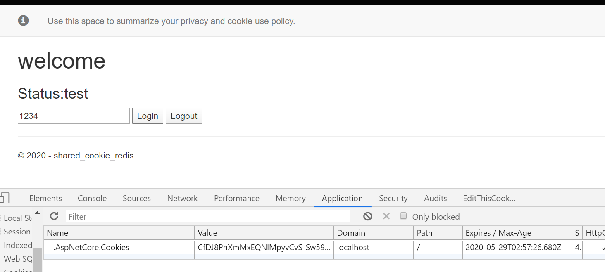
將網站 container 停止，並重新 run 一個新的 container
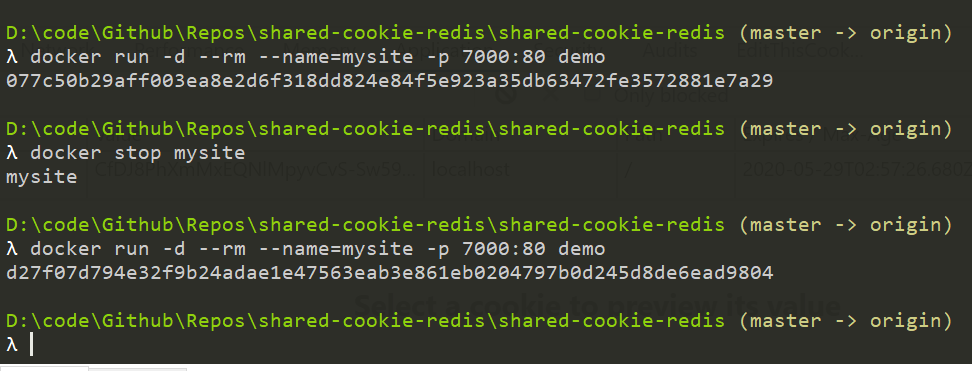
瀏覽器直接重新整理，觀察 cookie 與頁面
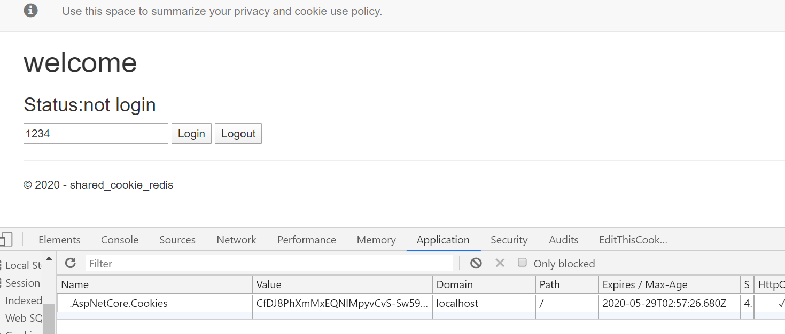
所以我們可以合理的猜測，因為 cookie 加密 base on machine key，但是因為在 container 重新建立的情況下，machine key 不同，所以原先產生的 cookie 也隨著失效了
那麼，如果 machine key 是一樣的，是否就可以解決這個問題？
設定 asp.net core 資料保護
最多的資料大概就是官網了，這裡提到很多種方法，大致上講一下
就我理解的部分來說，整個 cookie 的產生很大一部分取決 machine key，他是一種資料保護的機制，原本 windows 主機上都會有這東西，時間到了它會自動產生一個，通常的路徑會是在%LOCALAPPDATA%\ASP.NET\DataProtection-Keys，如果我們要變更程式取得 machine key 的位置的話，可以透過PersistKeysToFileSystem來做，而你一但變更了這個位置，這個 key 就會是沒有就會是沒有加密過的，如果你還想要加密，那就要透過ProtectKeysWith，並給予一個符合 x.509 的憑證來加密資料，這裡有一個範例可以看一下
如果想要測試的話，可以直接用下面的方式就好，這樣子專案目錄下的 keys 在 runtime 的時候就會產生 key，此處可以將 key 的 expires 時間設置長一點，然後將這個產生出來的 key 加入到專案內，並且設定編譯時候的動作永遠複製，這樣就都會用同一個 key，但是因為我沒辦法驗證 expires 是否真的有效，加上一些因素，最終沒有在朝這個解決方案下去研究
1 | services.AddDataProtection().PersistKeysToFileSystem(new DirectoryInfo("keys")); |
安裝 Redis 相關套件
StackExchange.RedisMicrosoft.AspNetCore.DataProtection.Redis
這版本很怪，.netCore 2.2 以上才能裝Microsoft.AspNetCore.DataProtection.StackExchangeRedis，但 2.1 以下的只能裝Microsoft.AspNetCore.DataProtection.Redis，在 Rider 的介面裡我又找不到，最後直接用 cli 下指令安裝
1 | dotnet add package Microsoft.AspNetCore.DataProtection.Redis --version 0.4.1 |
接著在startup.cs，設定資料保護，當然 redis 要先啟動起來
1 | //startup.cs |
把網站跑起來，接著再去查詢 Redis 可以看到已經有 key 存入了
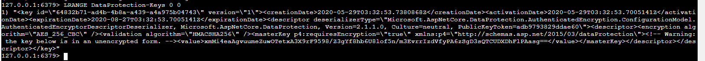
重新打包 image
網站停掉，原先的 image 刪除，重新再做一個 image
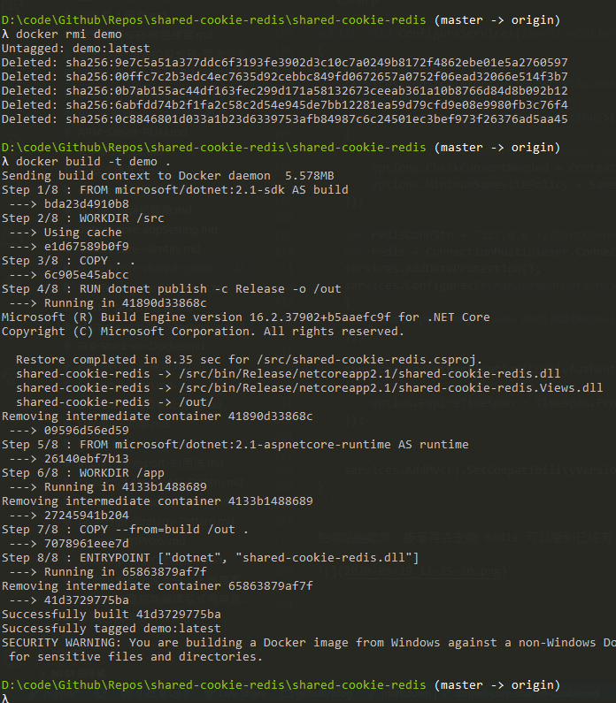
docker run 網站之後，進行登入並觀察 cookie 資訊
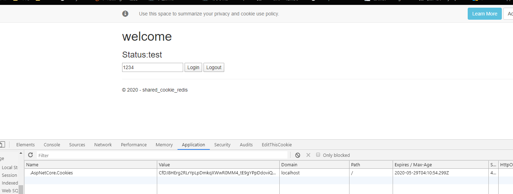
將 container 刪除再重新 run 一個
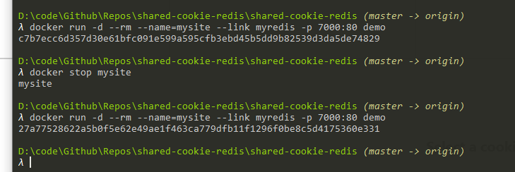
瀏覽器重新整理，查看是否為登入狀態
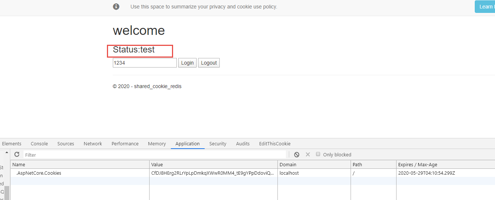
這邊要注意的事情是因為我們用了 redis，原先在程式內寫死127.0.0.1:6379如果包成 docker，會不能用。因為 docker container 要連 redis 應該要連 redis container 的 name，所以這邊為了 redis 的連線字串，將他放在Properties/lanuchSettings.json的environmentVariables區段
並且在 docker image 打包的時候，透過ENV ASPNETCORE_ENVIRONMENT="Lab"去指定系統環境變數為Lab，然後，在專案Program.cs加了下面這一段，讓程式在 Lab 環境下可以讀取不同的連線字串供測試使用
1 | public static void Main(string[] args) |
總結
至此，整個 POC 已經完成，相關程式碼已放置於 Github